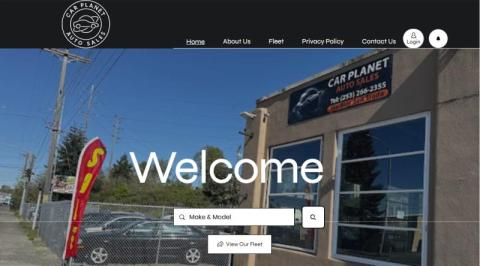
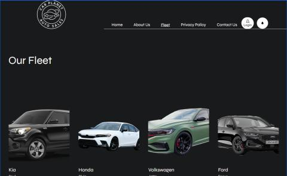

Client Website
Car Planet Auto Sales
Designed and developed a modern dealership website focused on inventory browsing, customer trust, and lead generation. Created responsive layouts and intuitive navigation to improve the customer experience.
UX/UI Design
HTML/CSS
Responsive Design